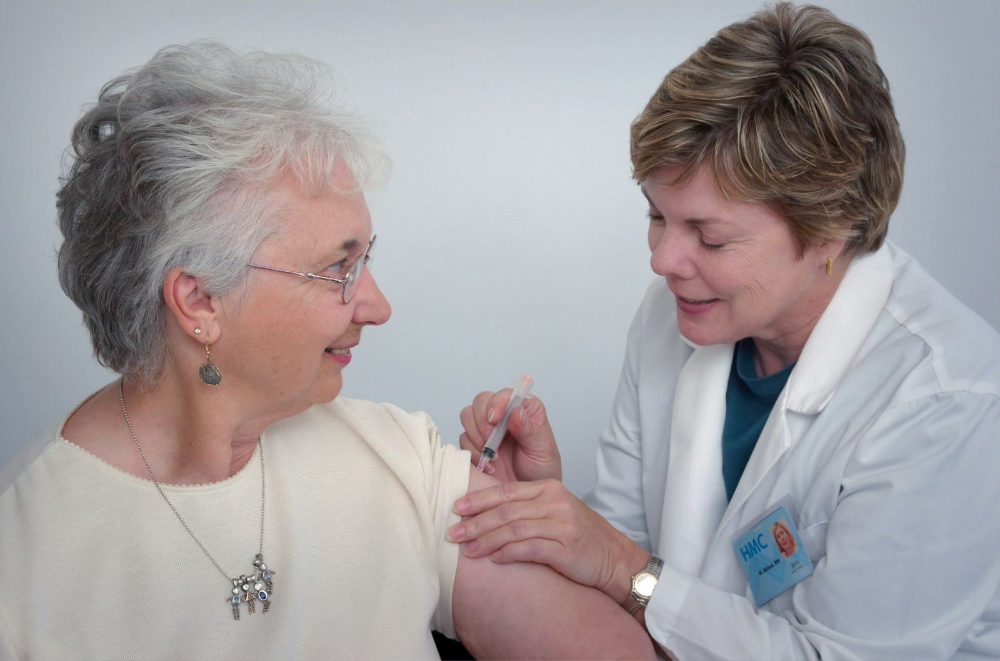

À propos
Notre mission
Être le trait d’union par lequel nos membres obtiennent aide financière, accompagnement et information.
Notre vision
Que personne dans notre région n’affronte le cancer seul : la Fondation vient en aide à tous ceux qui en ont besoin, avec réconfort, soutien et une présence fidèle tout au long du parcours.


La Fondation du cancer de Gaspé a été une lumière durant l’une des périodes les plus difficiles de ma vie. Leur attention, leur compassion et leur dévouement m’ont donné force et espoir au moment où j’en avais le plus besoin.
Un impact réel.
Depuis notre fondation en 2003Nous offrons à nos membres des ressources, de l’inspiration et la force de lutter contre le cancer et d’en limiter l’emprise. Car si le cancer est puissant à bien des égards, il a aussi ses limites. Voici quelques-unes des choses qu’il ne peut pas faire :
- Il ne peut pas briser l’amour
- Il ne peut pas anéantir l’espoir
- Il ne peut pas affaiblir la foi
- Il ne peut pas détruire la paix
- Il ne peut pas mettre fin à l’amitié
- Il ne peut pas effacer les souvenirs
- Il ne peut pas réduire le courage au silence
- Il ne peut pas envahir l’âme
- Il ne peut pas voler la vie éternelle
- Il ne peut pas vaincre l’esprit
Notre histoire
La Fondation du cancer de Gaspé est née du rêve de Noreen Hackett. Lors d’un symposium pour femmes, elle a découvert la Fondation Linda LeMore-Brown, créée pour répondre aux besoins financiers des personnes atteintes de cancer dans le district de Bonaventure. Elle a reconnu le même besoin dans la région de Gaspé.
La Fondation a vu le jour en juillet 2003 et a obtenu à ce moment son statut d’organisme de bienfaisance. Elle est gérée à 100 % par des bénévoles et sert les résidents de Grande-Vallée à Coin-du-Banc, y compris Murdochville.
Elle agit comme centre d’information bilingue et offre une aide financière aux personnes qui doivent se rendre à Chandler, Sainte-Anne-des-Monts, Rimouski, Rivière-du-Loup, Québec, Montréal ou Sherbrooke pour leurs traitements.
La Fondation n’est affiliée ni à l’Association du cancer de l’Est du Québec ni à la Société canadienne du cancer.